Chirp
Two black holes spiral together and you hear them. The orbit is integrated with radiation reaction and held to Peters’ laws; the strain plays at its real pitch or three octaves up, picture locked to the sound. Use headphones.
X3D demos, in the order they were asked for. Each one is a single page you can open and drag around. Demos 1 to 3 and 6 run on WebGPU, and where a WebGPU demo has a twin that does not need it, the twin is linked beside it. Demos 4 and 5 are drawn by X_ITE (WebGL) and open in any current browser. Demo 6 is the Babylon flagship. Demo 7 is Loomsong, now playable; Demo 8 is the traceability page; Demo 9 is the manifold again, on Babylon WebGPU; Demos 10 and 11 are the Chirp and Electron Cloud studies on Babylon WebGPU; Demos 12 to 17 are X3D drawn by X_ITE: the Blender X3D I/O showcase, the MuJoCo bridge, the ontology constellation, the Dynasty Loom, Confluence (IFC) and Gobbler; the shelf below them points at what else has been committed to GitHub since 7 October.
3D conqueror by night.
Somewhere around the late '90s I met X3D and never got over it. Now I make AI models write 3D worlds and then hand them to a validator that tells them, exactly and without mercy, what they got wrong. I call it the tether, because X3D is the 3D format an AI can be held accountable to. My colleagues call it “why is that laptop fan screaming again.”
Things I have, technically, built: a particle collider, a drift racing game, a glass brain, a turkey made of ontologies with a sun for a heart, and a space elevator nobody asked for. Things I have, technically, not done: sleep.
Motto: valid is not the same as visible. Second motto: one more demo.

Five generated collision events written as X3D 4.0. The page parses the scene, runs its ROUTEs and draws it with WebGPU, with five GLSL shaders ported to WGSL.
Version 2 (v1 kept). The X_ITE twin lives on its own site (the dirac repository) and has its own tour, optics and 4K still. Drag to orbit, scroll to zoom, keys 1 2 3 for viewpoints, T tour, L look. Events are generated for display, not measured. Each event grows over time, so a page can open on the vertex flash.

A synthetic rock-cut facade of 140,000 Gaussian splats, written as X3D 4.1. It is generated (CC0) and is not a scan of any real monument. Splats are sorted on the GPU every time the view changes.
Version 2 (v1 kept). 12 MB page; it takes a moment to load. Compared with X_ITE 16.4.3 on one view: 41.9 dB PSNR (software GL, correctness only).
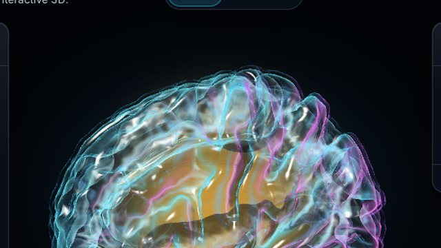
An interactive brain with glass cortex, deep structures, MRI slices and synthetic tracts, plus a CT torso tab. An X3D reader of our own parses the scene and runs its ROUTEs; Babylon.js draws it with WebGPU. Click a region, take the tour, switch looks, try the Inside view.
Version 1 is untouched; version 2 draws the same pixels and adds a shared adapter retry, the Windows flag note and an opt-in Timing button that prints numbers for you to copy (no timing from a real GPU has been published yet). Needs WebGPU and loads Babylon from a CDN. The X_ITE twin (X_ITE 16.6.0, bundled) is the page this one was ported from and needs only WebGL; it carries the same notices. Not a medical device. The brain is a template average, the tracts are synthetic and the activation is illustrative. Cortex shapes: TemplateFlow fsaverage (FreeSurfer lineage), shown for educational use; its licence is not confirmed and the rights holder may ask for removal. Deep structures and slices: MNI152NLin2009cAsym (Fonov et al.). Torso: TotalSegmentator example subject (Wasserthal et al., 2023).
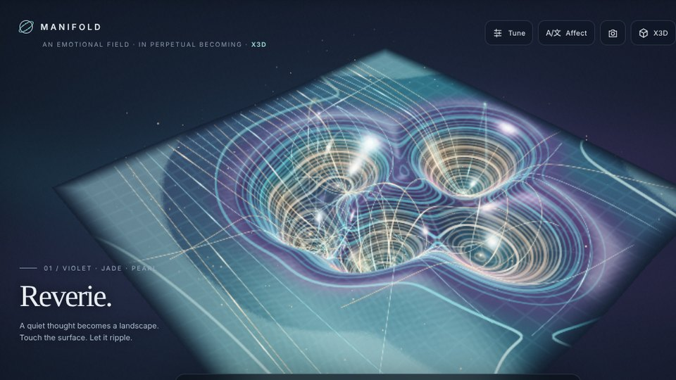
An emotional field drawn as a Riemannian surface: the metric g = λ²(dx² + dz²), the surface coloured by its Gaussian curvature K = −Δ ln λ / λ², and the luminous paths are its geodesics. One X3D 4.0 scene, drawn by X_ITE 16.5.1. Four moods, labels in English and Chinese, click to perturb the field.
Not WebGPU. This is a copy of the x3d.STEM repository’s manifold study (files identical to the original site’s, checked by hash); the original site is linked too. Drag to orbit, scroll to zoom, click to perturb, H hides the controls. The scene was rebuilt from an existing WebGL page; its debrief records the checks (curvature and geodesics against exact references, and a picture comparison against the original on four moods, SSIM 0.91 to 0.96). The drawn landscape is a picture of the metric, not an isometric embedding, and the mood labels are illustrative. Preview frame drawn on a software GPU. The comparison frames from the debrief are left out of this copy.
Science and maths as X3D worlds that carry their own evidence. Each study is an X_ITE page built from computed data and checked against an exact or published result. These are the repository versions, not WebGPU ports. Every page re-checks each data file against the hash recorded in the repository before it draws anything.
Two black holes spiral together and you hear them. The orbit is integrated with radiation reaction and held to Peters’ laws; the strain plays at its real pitch or three octaves up, picture locked to the sound. Use headphones.
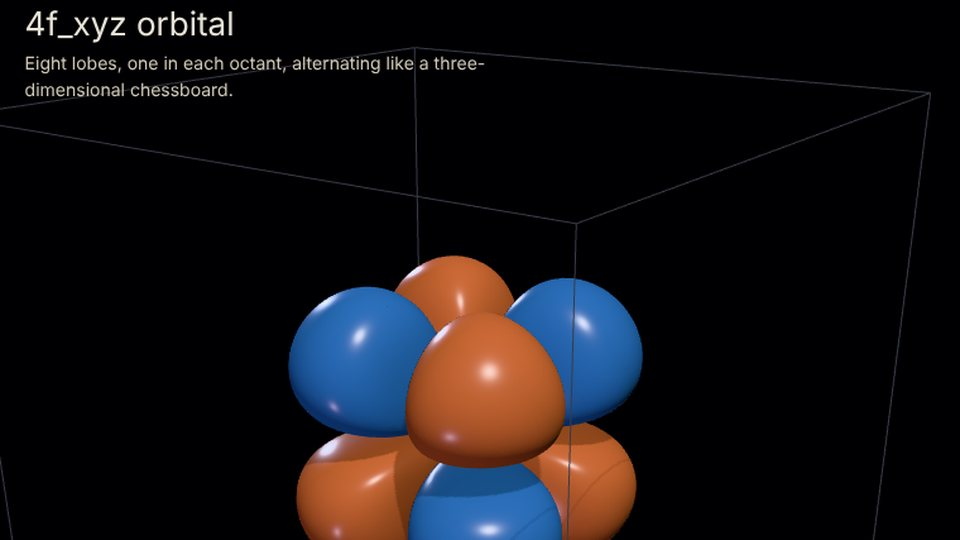
Hydrogen solved numerically and held to the exact answers: ten orbitals from 1s to 5g, coloured by the sign of the wave, and Lyman-α, whose charge swings through the nucleus at the frequency of hydrogen’s 121.5 nm line.

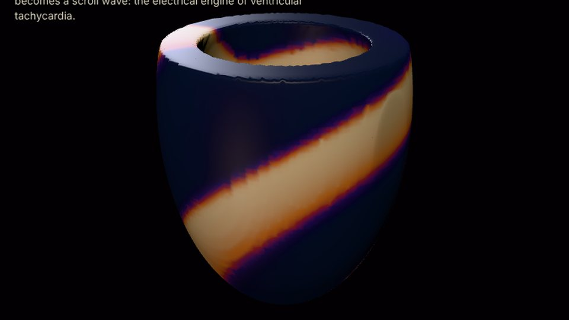

How these got here. The repository does not commit the studies’ data files, so I rebuilt them with each study’s own builder on 2026-11-07 (every witness green on every case) and bundled them with the pages. The pages then verified against the repository’s recorded hashes in a headless browser. Kerr 2 is left out because its data is about 330 MB of images. Flagship pass 1; nothing here has been measured on a real GPU, and the study pages show their own live frame rate, which is yours, not ours.
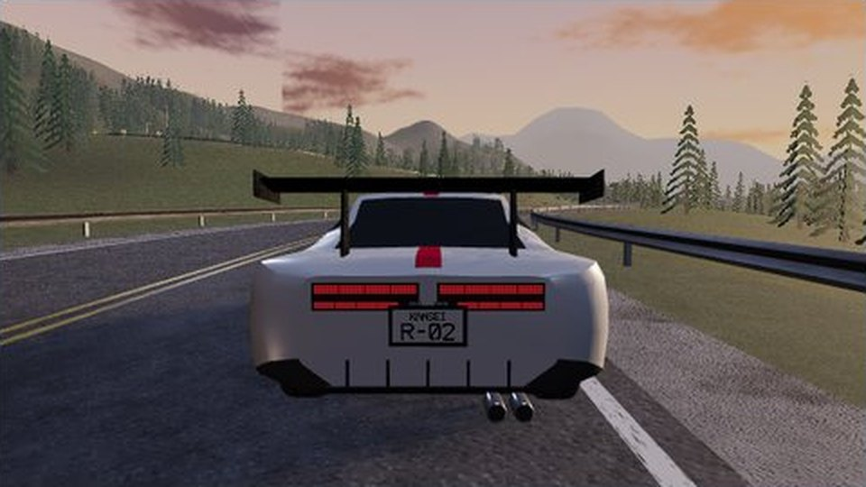
A night-drift racing game with four original cars and five circuits. Every world in it is an X3D file, and the physics is a separate deterministic 120 Hz simulation, so a recorded lap replays identically in any renderer. This page runs it in Babylon.js 9.32.0 in WebGPU mode, through our own X3D reader. Gamepad and touch work too.
Hosted on its own site (the platformer repository), so these links leave this page. Keys: W gas, S brake, A and D steer, Space handbrake, Shift boost, C camera, M sound. Needs WebGPU; if the page says no adapter answered, see the flag tip at the top. Checked on a software GPU against the same game on X_ITE 16.5.1: the simulation matched on 6 of 6 recorded views and the pictures agreed to 24.4 to 32.8 dB PSNR (correctness only; the receipt has the per-view table and the known differences). It has an opt-in Timing button, off until pressed, that uploads nothing. No timing from a real GPU is published here. The sound is the game’s own synthesiser and nobody has listened to it in this port.
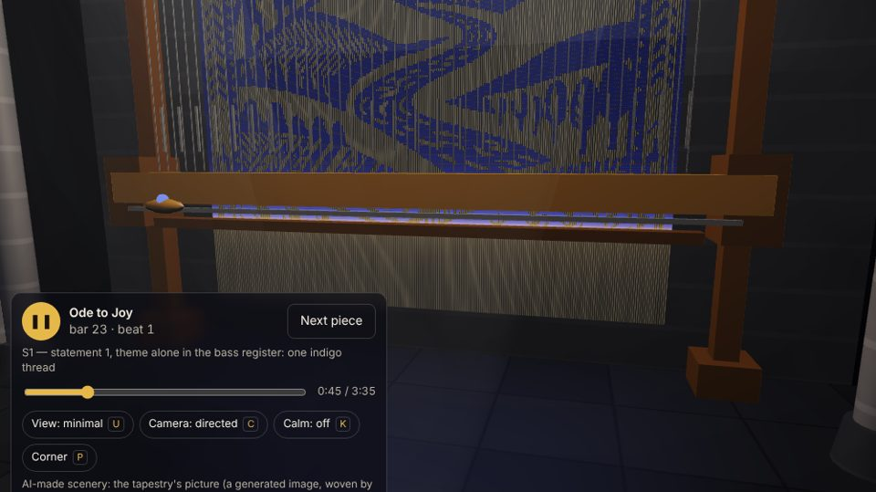
Two programmable machines play two pieces of music. World 1, Ode to Joy (Beethoven, 1824): a Jacquard loom in a cathedral of light weaves a tapestry, and each statement of the theme lays down one colour layer. World 2, Rondo alla Turca (Mozart, 1783): a pinned brass barrel carries every written note as a pin, a steel comb plucks them and a clockwork band strikes on the beat. Every thread, pin, tile and light is a real note from the score. Press Play; sound starts only then.
Keys: 1 and 2 switch piece, U cycles the interface (none, minimal, Learn: names the note under the pointer), Space plays and pauses, Left and Right step bars, C frees the camera, K calms it. It runs in X_ITE 16.5.1 (WebGL), no flag needed. The sound is synthesised in code except the Alla Turca piano, which uses the Salamander Grand Piano (CC BY 3.0); it is not a recording of anyone playing. The audio meters read −14.00 LUFS on both pieces, but no human has reported listening to the masters yet, so the ear is the open check. On a software renderer it ran at the machine’s own pace; about 60 fps was seen once on an integrated GPU (3 November). The tapestry picture, the dome motifs and the moving pictures behind the title and end cards are AI-made and labelled on the page. Licence: everything derived from the Alla Turca score is CC BY-NC-SA 4.0 (non-commercial, share-alike); the rest is MIT, and NOTICE.md travels with the page.
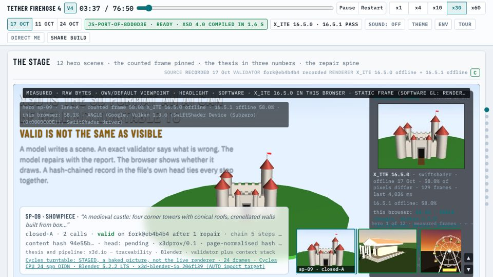
A model writes an X3D scene; an exact validator says what is wrong; the model repairs it with the report; the browser shows whether it draws; a hash-chained record in the file’s own head ties every step together. This page replays a recorded run of 358 real model calls on 17 October 2026 (50 prompts, five model lanes, names withheld in this build) next to the 11 October replay and the 24 October bench, with a repair morph, a tamper arena and a Blender export suite. Its thesis is on the stage: valid is not the same as visible.
The page’s own headline: valid scenes rose from 20 to 98, 57 to 100 and 77 to 100 percent on the three paid lanes after repair, and 7 of the 178 scenes valid at the end still draw nothing in X_ITE. Validator: the x3d_mcp fork at eb4b4b4; renderer X_ITE 16.5.0 and 16.5.1; grade C for this sample only (one run per prompt), so read the rates as examples, not as a ranking. This is the share build: lane names, hardware and run costs are removed (the spend column reads zero by design) and a leak sweep must pass for it to build. Open it on a laptop; the stage renders live and a software GPU is slow.
Repositories on the two accounts that were pushed to since 7 October 2026 and are the work itself, not forks of other people’s projects. Live sites first, then source-only repositories. Links only; nothing is copied here.
Eleven demos in plain X3D you can open and check: splats, terrain, stars, the Shroud of Turin, and Blender and the browser rendering the same file.
Small scripts-free X3D 4.0 toys. Each one runs in X_ITE and in X3DOM: a flywheel, a spiral galaxy and more.
An X3D piece with a Listen button, a full-score view, sections and four cameras. It carries a credited mural photograph from Wikimedia Commons.
Seventeen masterclass guides on graph analytics, data engineering and knowledge systems, plus graph-visualisation pages.
The collider on X_ITE, with its own tour and optics. Also linked from Demo 1.
The drift game on Babylon WebGPU. Also Demo 6.
Loomsong: Beethoven’s Ode to Joy and Mozart’s Rondo alla Turca as machines. Playable as Demo 7.
X3D traceability and observability for ML pipelines: a hash-chained provenance record that rides in the scene itself. Demo 8 is its page.
The X3D Loom: a method for building X3D worlds that carry their own evidence, with the checking kit. It also holds the WebGPU ports behind Demos 1 to 6.
A working fork of Blender’s X3D add-on, bringing the exporter and importer up to X3D 4.0 and 4.1.
An MCP server for generating, validating and converting X3D content (a fork).
Exploratory analysis of a family of repositories’ git history, with the output as an X3D world you fly through: a time helix, a tie constellation, a code city.
The ontology and Gobbler work.
An interactive piece published as a Claude artifact, open to anyone with the link.
The six STEM studies behind Demo 5, plus the manifold study.
Left out on purpose: forks of other people’s projects (game engines, CAD tools, agent frameworks) and private repositories.
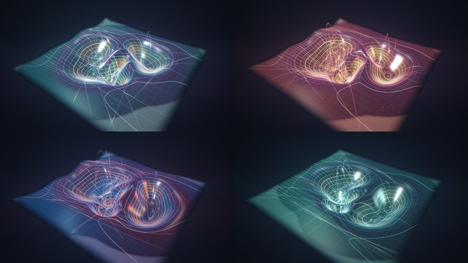
The same X3D scene as Demo 4, drawn by Babylon.js 9.32.0 in WebGPU mode through our own X3D reader, with all seven shaders ported to WGSL by hand. Bloom, vignette, film grain and a touch of chromatic aberration are on by default; the lens switch turns them off, and “lens off” is the frame as authored. It looks richer than the X_ITE page on purpose, but it does not change the data: the geometry, the field and the geodesics are the same.
Needs Chrome or Edge 113 or later with WebGPU; on Windows Chrome it may need chrome://flags/#enable-unsafe-webgpu (the page says so too). It loads Babylon from a CDN with an integrity hash. Checked on a software GPU at 640 × 360 with the lens off, against X_ITE 16.5.1 on the same scene and camera: Reverie 49.3 dB, Euphoria 48.5 dB (Catharsis and Stillness not compared yet). That is correctness only; no timings exist. The page has an opt-in Timing button that prints a copy-paste block; real-machine numbers are expected from a Windows laptop and a Mac, and none are published yet. Screenshots above are from the software renderer. Source: x3d.loom, PR 19 (x3d.webgpu/demo/src/build-manifold.py), receipt runs/webgpu-manifold-20261107/RECEIPT.md.
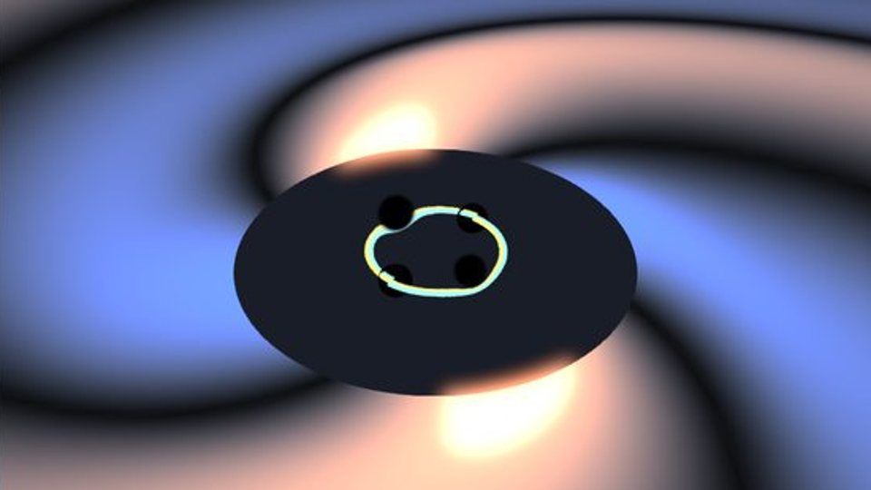
The Chirp study from Demo 5, drawn by Babylon.js 9.32.0 in WebGPU mode through our own X3D reader. The study’s own script runs byte for byte unchanged; only the drawing is new: an HDR bloom, a hand-written WGSL post-process that bends the light around the two holes, an unlit glowing wave sheet and glowing trails. The look is optional and on by default; a pill on the page (or ?look=0) switches to the frame as authored.
One offline file (about 6 MB) that loads Babylon from a CDN with an integrity hash. Needs Chrome or Edge 113 or later with WebGPU (Windows Chrome may need chrome://flags/#enable-unsafe-webgpu). The page runs the study’s own browser witness: the wave heights agree with the builder to 2e-15 on all three inspirals. Compared with X_ITE 16.5.1 on a software GPU the plain look differs by 24.9 to 25.4 dB (the gaps are logged, not tuned away: this port chased intensity, not pixel perfection). Not yet checked: the Hear button (audio), Safari and Firefox; no timings and no real-GPU numbers; no Timing button yet. Source: x3d.loom, PR 21 (x3d.webgpu/demo/src/build-chirp.py --kind chirp).
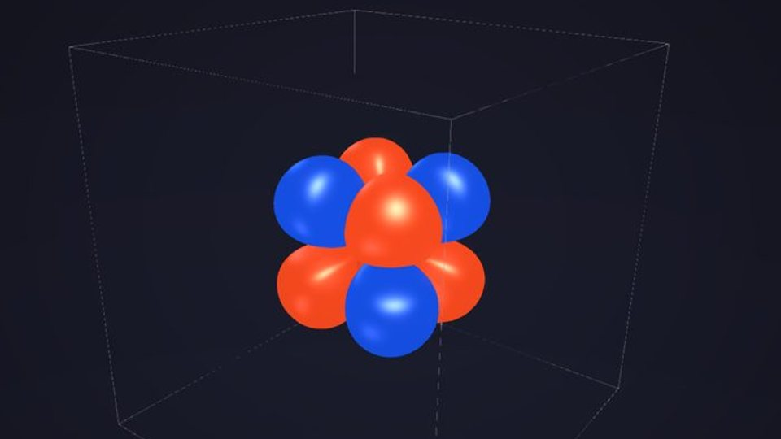
The Electron Cloud study from Demo 5 on Babylon WebGPU: hydrogen orbitals as glossy shells with a glowing rim, a soft fill light, bloom and vignette. The cut slider and the Lyman playback work, and the study’s own script is unchanged. The look is optional and on by default; the pill (or ?look=0) shows the frame as authored.
One offline file (about 9 MB), Babylon from a CDN with an integrity hash. Needs Chrome or Edge 113 or later with WebGPU. The page’s browser witness passes (the 4fxyz orbital to 1e-15; 24 of 24 Lyman frames to 5e-15). Against X_ITE 16.5.1 on a software GPU the plain look is 19.2 to 19.4 dB over the whole frame and 21.0 to 25.0 dB on the object pixels (the X_ITE headless background draws black, which accounts for part of it); gaps are logged, not tuned away. Not yet checked: Safari and Firefox; no timings and no real-GPU numbers; no Timing button yet. Source: x3d.loom, PR 21 (build-chirp.py --kind cloud).
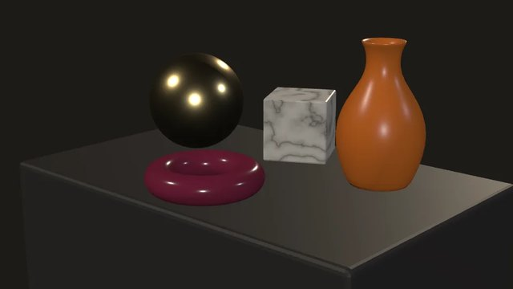
Twelve small X3D scenes from the work on Blender’s X3D add-on, each with the validator’s verdict on that exact file. A still life exported from Blender as X3D 4.0 and measured against Cycles; the same still life as 24,000 Gaussian splats; splat quaternion order; the 978 stars within 50 light-years; a repair loop; a lighting bug; NURBS weights; PhysicalMaterial and profiles; GeoLOD; an unregistered component; ellipsoids beyond Earth; LOD under a scale. Each starts as a still; press Load live 3D.
X_ITE 16.6.0 is bundled with the page; it fetches nothing from a CDN. All 24 scenes load on it; annotation.x3d reports an unknown AnnotationTarget node, which is that demo’s subject. The still life scores SSIM 0.905 against the Cycles path tracer (the page’s own measurement, X_ITE 16.4.3). X_ITE 16.6.0 still reads splat orientations as x y z w. Stills and timings on the page were taken on 16.4.3.
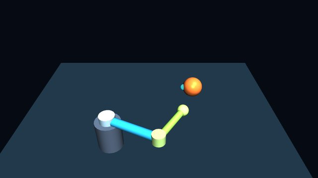
Author an articulated arm in X3D, simulate it in MuJoCo, and bring poses, forces and experiment records back into the scene. Drag the cyan sphere to set a goal and the orange sphere to place an obstacle, then press Run physics; export the scene or an experiment package.
Real MuJoCo 3.17.0 compiled to WebAssembly (Apache-2.0) and X_ITE 16.7.0, both bundled; no network requests. The page is 29 MB. Experimental bridge 0.1 with a bounded contact-arm/1 profile, not a general converter or native X3D physics. The console shows five X_ITE parser warnings from the app’s generated metadata, as delivered.
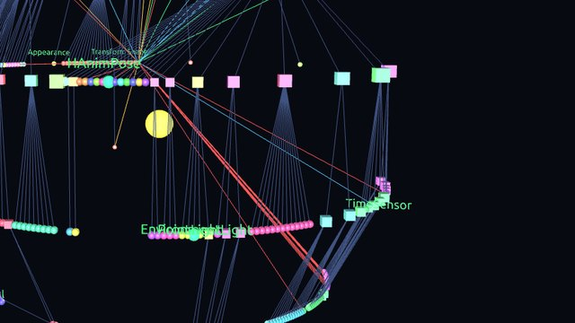
364 classes of the X3D Ontology 4.1 (Web3D draft, 29 September 2026) on a Dyson-style shell: longitude is a layout angle, latitude is class depth. Boxes are abstract types, spheres concrete nodes; green is new in 4.1. The layout is a display choice, not an ontology fact.
One X3D 4.1 file, unchanged, with three viewpoints (Overview, Inside the shell, Top) and X_ITE 16.6.0 bundled.
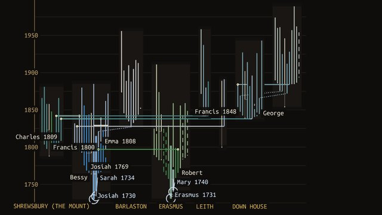
Three families woven as cloth: lives are the warp, marriages the weft. Darwin–Wedgwood, Habsburg and Rothschild, each also as a hypersphere and a pocket world in X3D, with a narrated tour and a year slider.
The 26 portraits are AI portraits after public-domain sources, each labelled on the page; anyone not approved shows a monogram, never a face. Fonts load from Google Fonts. X_ITE 16.5.1 bundled.
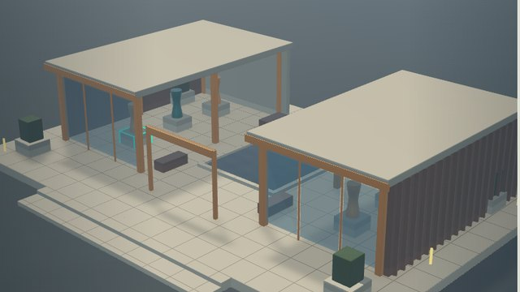
A gallery whose every building element keeps its IFC identity: 111 products, 23 shared meshes, baked light and its own shaders. Use the camera shots, the atmospheres (daylight, nocturne, study), the element search and the inspector.
The live studio is a transactional bridge: a Python server (IfcOpenShell) owns the IFC model and sends each revision over a WebSocket. A static site cannot run it, so this copy replays one recorded revision: the scene is byte-identical and its receipt hash is still checked, and the matching model.ifc can be downloaded. Editing, peer views and live commits need the server. X_ITE 16.5.1 bundled.
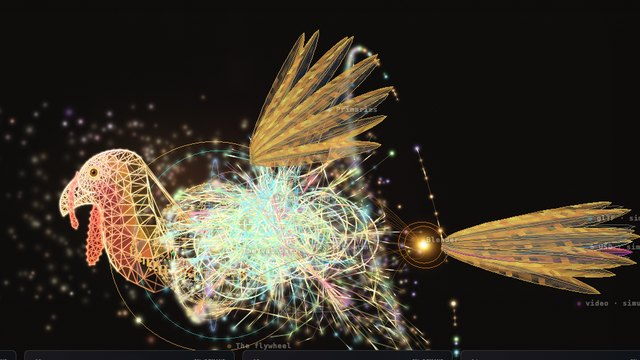
A constellation becomes a creature, and inside its heart four places wait: Giza, the Pantheon as 50,058 Gaussian splats, a cabinet of materials, and the Drillfield at Virginia Tech. Choose Begin journey or a world card; drag to orbit, scroll to travel.
Worlds load on demand and the page verifies each scene’s hash. Giza’s Hall of Records is fictional. The Pantheon is an appearance sample whose source and licence are not stated. The Drillfield’s imagery and surface model come from the Google Solar API and are attributed to Google.
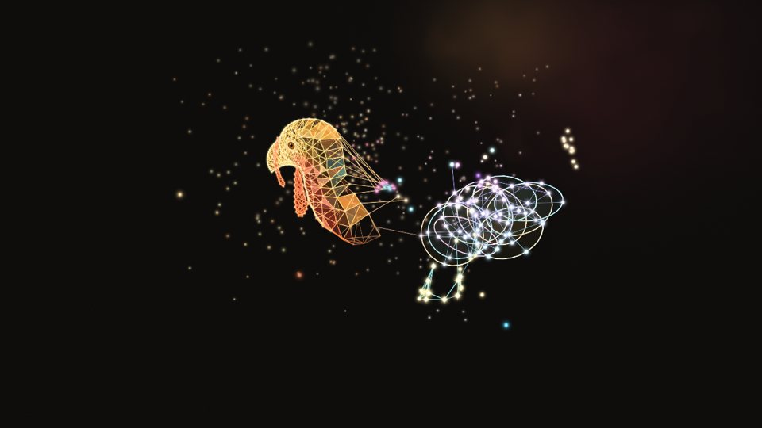
The Gobbler as a knowledge graph drawn as a creature: one scriptless X3D 4.0 scene (121 entities in 10 loops), drawn by Babylon.js 9.32.0 in WebGPU mode through our own X3D reader. The page’s own explorer and tour run unchanged; touch the head and it dissolves into embers.
Needs a WebGPU browser: Chrome or Edge 113 or later, Safari 26, Firefox 141; on Windows with an Intel UHD 620 Chrome may need chrome://flags/#enable-unsafe-webgpu (the page says so itself). It loads Babylon from a CDN with an integrity hash. Checked against X_ITE 16.5.1 on a software adapter, correctness only: six views score 14.6 to 19.7 dB, low because the scene’s animation phases differ between captures, so this is not a pixel-parity claim. Known gaps: stars are camera-facing quads rather than point sprites, embers are approximated, picking covers the head’s facets only, the 2,476-star deep build was not run, nothing is timed on a real GPU, the page has not been seen on screen on a real GPU yet, without WebGPU it shows a full-screen message with no close button, and Safari and Firefox are unchecked. The page has an opt-in Timing button; ignore its live “fps” readout, which counts display callbacks, not scene time. The graph’s individual outside contributors are shown as “Open-source maintainer”. Source: x3d.loom, PR 22 (x3d.webgpu/demo/src/build-gobbler.py).
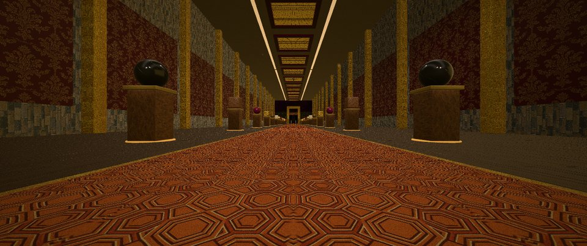
A 138-second film carried by one X3D 4.0 file: the set, 35 materials, 60 lights and the director’s camera. The page has three engines for the same file: X_ITE, a three.js WebGPU engine, and now Babylon.js 9.32.0 in WebGPU mode through our own X3D reader, which opens first. A Look switch adds reflections, bloom, grain, dust and three shadows on top of what the file says, and turns off for the file as authored.
Needs a WebGPU browser: Chrome or Edge 113 or later, Safari 26, Firefox 141; on Windows with an Intel UHD 620 Chrome may need chrome://flags/#enable-unsafe-webgpu. Babylon loads from a CDN with an integrity hash and only when its engine starts; the page’s typefaces come from Google Fonts. The page is about 32 MB because it carries all three engines. Checked against X_ITE 16.4.3 on a software adapter, correctness only: with Look off, six film times score 25.5 to 30.7 dB; with Look on, 18.4 to 28.2 dB, lower by design because it adds to the picture. Not tuned to those numbers and not pixel perfect. Known gaps: no depth of field, no light shafts, nothing is timed on a real GPU (the page’s Bench measures on your own), Safari and Firefox are unchecked, the three.js engine could not be captured by the headless rig, and the X_ITE engine logs a missing line-type texture that the original page also lacks. The film has no sound. Source: x3d.loom, PR 23 (x3d.webgpu/demo/src/build-odyssey.py).
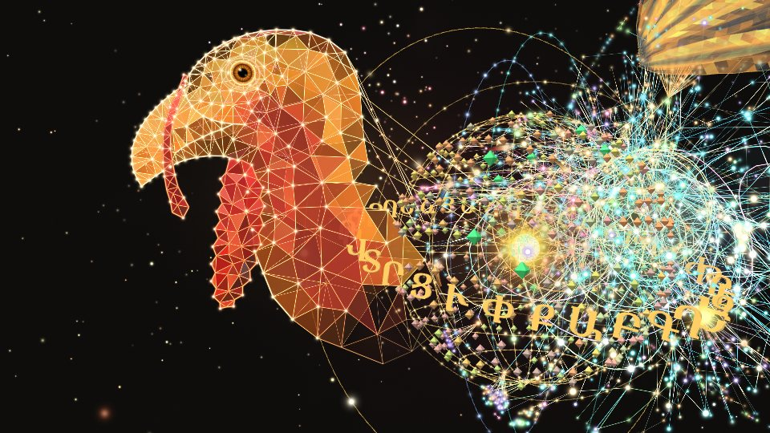
The bird first: the Gobbler head, the Sun in its chest that beats a replay of real validator runs, a Dyson ribcage of ontology classes, the ring of the 36 Armenian letters, and a tail fan. Fly the zoom ladder with keys 1 to 8, down through the Earth and Moon to a Blender-modelled village. It is one X3D scene drawn by Babylon.js 9.32.0 in WebGPU mode through our own X3D reader, with the page’s own explorer, tour, hover cards and sound (key M) running unchanged.
Needs a WebGPU browser: Chrome or Edge 113 or later, Safari 26, Firefox 141; on Windows with an Intel UHD 620 Chrome may need chrome://flags/#enable-unsafe-webgpu. Babylon loads from a CDN with an integrity hash. The knowledge graph in this public copy is redacted: entries that touched private notes, people, costs or accounts show as “(redacted)” or “A person” with no text, and no file names; counts and positions are unchanged, so some hover cards are empty on purpose. Checked against X_ITE 16.5.1 on a software adapter, correctness only: the eight ladder views all draw, and the picture scores 7 to 13 dB against X_ITE, which means little because animation phases differ and X_ITE’s village frame is black on that rig. Known gaps: the humanoid figures are not skinned (they move as rigid parts), sound and click-to-pin were not exercised, the frame reads brighter than X_ITE’s, nothing is timed on a real GPU, and Safari and Firefox are unchecked. Source: x3d.loom, PR 24 (x3d.webgpu/demo/src/build-demiurge.py).
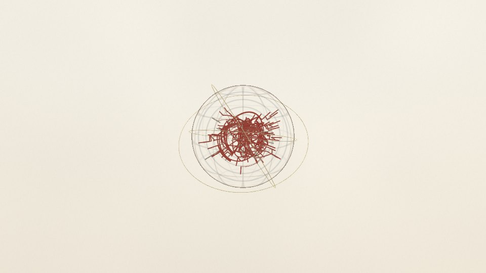
An atlas of three families (Rothschild, Habsburg, Darwin–Wedgwood). Its hypersphere view is a sphere of time: the founders sit at the centre, the present is the glass, each life is a fibre running outward and each marriage an arc. Here that view is drawn by Babylon.js 9.32.0 in WebGPU mode through our own X3D reader; the page’s own scripts, lens, tour and night look run unchanged. The tapestry view (Loom) stays on X_ITE, so the page is a hybrid, and without WebGPU both views use X_ITE.
Needs a WebGPU browser for the hypersphere: Chrome or Edge 113 or later, Safari 26, Firefox 141; on Windows with an Intel UHD 620 Chrome may need chrome://flags/#enable-unsafe-webgpu. Babylon loads from a CDN with an integrity hash; typefaces come from Google Fonts. Checked against X_ITE 16.5.1 on a software adapter, correctness only: eight museum shots score 29.0 to 37.8 dB, the night look and the selection and lens shots 36.3 to 39.4 dB, and a visitor play test (flight, select, lens, tour, tiers, family, night look, tapestry round trip) ran with no page errors. The 26 portraits are AI-made after public-domain paintings or photographs, or imagined where no likeness survives, and each one says which. Known gaps: the tapestry is not ported, no logarithmic depth, taps and hover were driven through the page’s own test surface, nothing is timed on a real GPU, and Safari and Firefox are unchecked. Source: x3d.loom, PR 25 (x3d.webgpu/demo/src/build-dynasty.py).
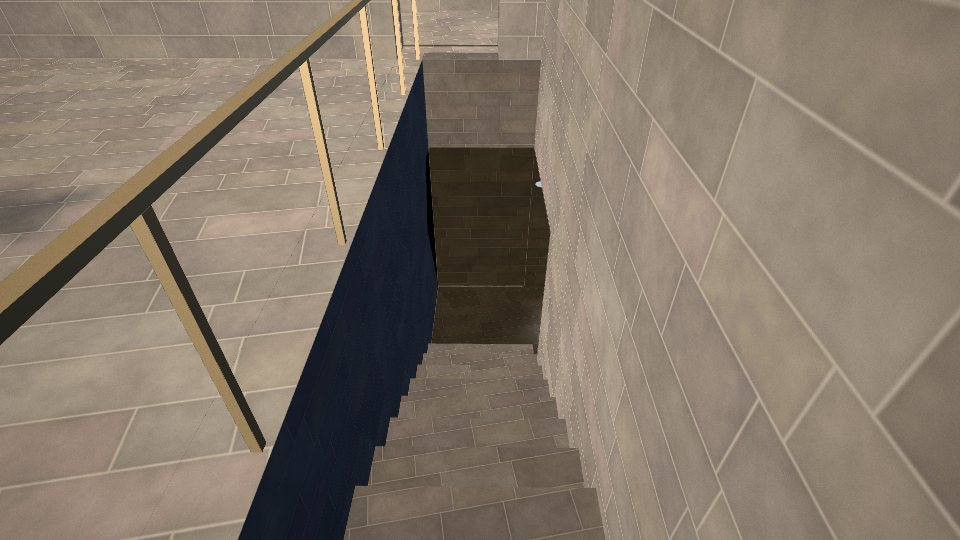
A 299-second film through the hall of a library, carried by one 14 MB X3D file with 23 viewpoints and no custom shaders: stone, oak, bronze, lamps, a sky dome and a galaxy 2.4 km out. It is drawn by Babylon.js 9.32.0 in WebGPU mode through our own X3D reader, with an X_ITE button on the page to compare the same file.
Needs a WebGPU browser: Chrome or Edge 113 or later, Safari 26, Firefox 141; on Windows with an Intel UHD 620 Chrome may need chrome://flags/#enable-unsafe-webgpu. It is a large page, about 38 MB with textures and the X_ITE comparison engine. Babylon loads from a CDN with an integrity hash; typefaces come from Google Fonts. Checked against X_ITE 16.5.1 on a software adapter, correctness only: five matched shots score 17.5 to 25.3 dB, geometry and the film clock agree, and lamp-lit interiors read 1.2 to 1.4 times brighter than X_ITE’s. Not tuned to those numbers. Known gaps: Text nodes are not drawn (the plaques and two fonts), one shadow map per shadow light, nothing is timed on a real GPU, only five of 23 viewpoints were compared, no audio was tried, and Safari and Firefox are unchecked. Source: x3d.loom, PR 27.
Made from frames of the demos above. No stock templates, no real people.
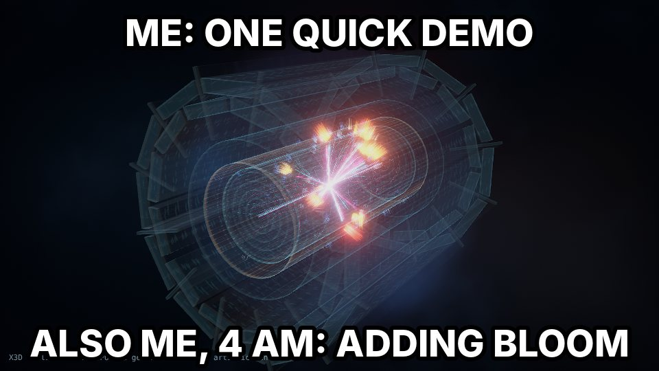
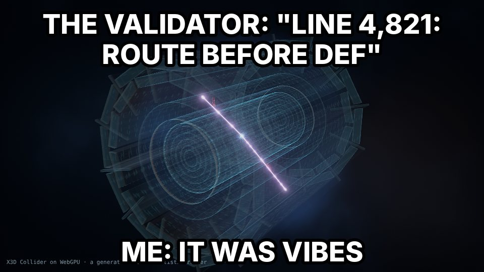

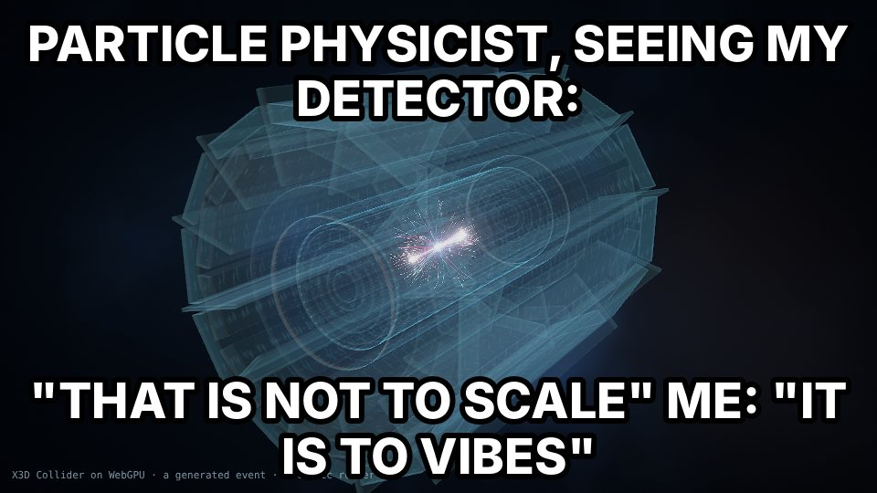
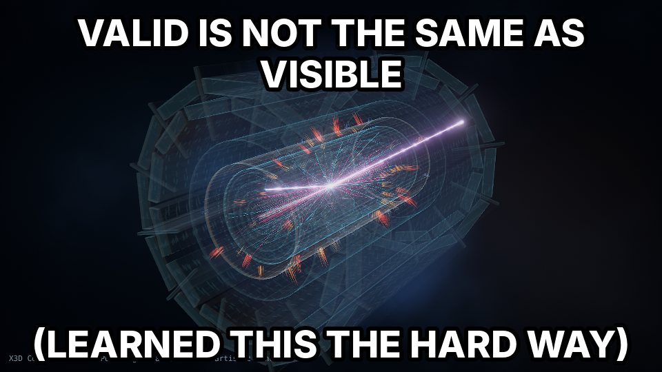
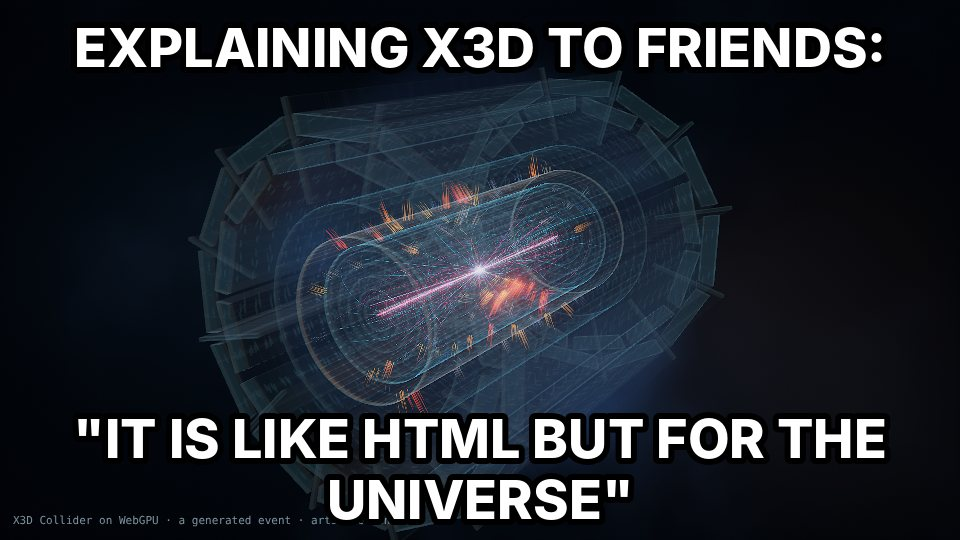
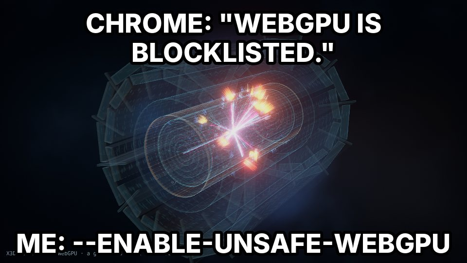
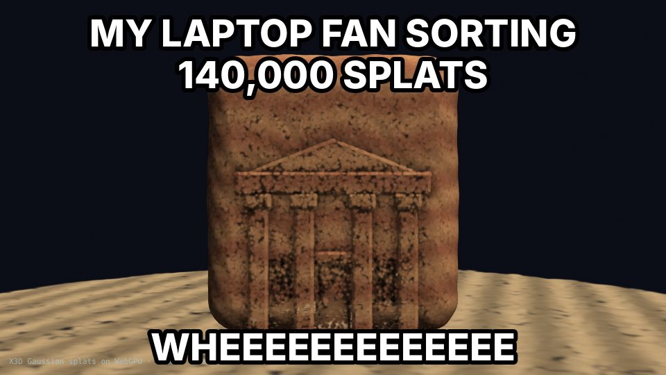